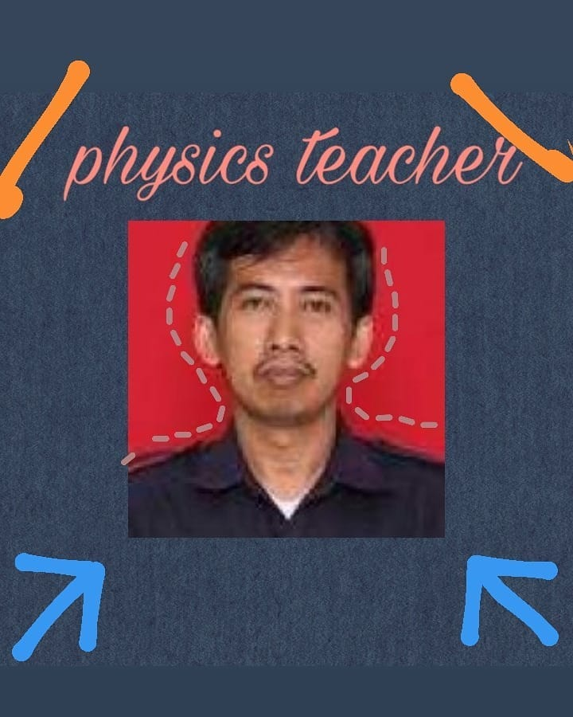
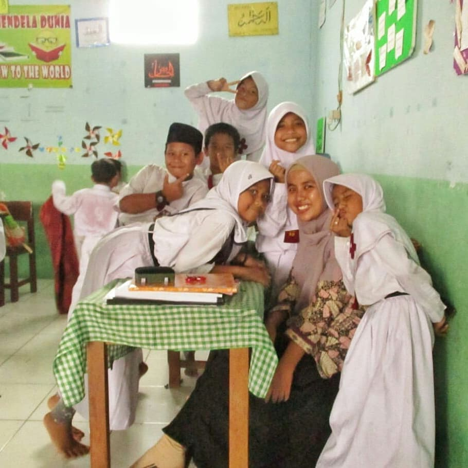

Artikel ini berisi kisah-kisah inspiratif tentang perjuangan para guru dalam mengajar selama pandemi yang memenangkan lomba #THRUntukGuru.
Sebagai salah satu wujud apresiasi Zenius untuk para guru yang terus berjuang mengajar muridnya selama pandemi, Zenius mengadakan sebuah perlombaan beberapa waktu yang lalu. Lomba ini berjudul #THRUntukGuru, sebuah lomba yang bisa dimanfaatkan oleh para siswa yang punya guru keren buat menceritakan kisah perjuangan gurunya selama pandemi.
Kami menerima banyak sekali kisah menarik. Ada banyak inspirasi yang kami dapatkan dari cerita-cerita tersebut. Ada total 104 peserta yang berpartisipasi. Dari membaca kisah-kisah itu, kami sadar bahwa ada banyak sekali guru hebat di luar sana yang tidak pernah hilang semangat meski Indonesia sedang dihantam pandemi seperti sekarang ini.
Dengan banyaknya kisah hebat yang masuk, kami sadar bahwa kami harus memilih kisah paling menarik berdasarkan kriteria yang telah kami tentukan sebelumnya (kualitas cerita, cara penyampaian, dsb) karena tidak memungkinkan apabila kami menjadikan semua kisahnya sebagai pemenang. Para juri telah bekerja keras untuk menentukan siapa yang akhirnya keluar sebagai pemenang dan berikut adalah 3 kisah #THRUntukGuru paling menarik pilihan kami.
Juara 1
Nama murid: Izzan Faruqy Azzahir
Asal sekolah: Pondok Pesanteren Darul Arqom Muhammadiyah Garut
Nama Guru: Nia Kurniawati
Sebagai juara 1, Izzan berhak mendapatkan hadiah uang tunai sebesar Rp 1.500.000,00 (satu juta lima ratus ribu rupiah) dan merchandise Zenius. Sedangkan Bu Nia akan mendapatkan uang tunai sebesar Rp 5.000.000,00 (lima juta rupiah) dan juga merchandise Zenius.
 Assalamu’alaikum, perkenalkan namaku Izzan Faruqy Azzahir, aku duduk di bangku kelas satu SMA/MA di Pesantren Darul Arqam Muhammadiyah Garut. Jujur, sepanjang masa pandemi aku sulit untuk melaksanakan kegiatan pembelajaran, terlebih dengan sistem pembelajaran daring yang dinilai jauh dari kata efektif. Ingin rasanya protes tentang hal ini, tetapi hal itu seolah terkubur ketika mendengar cerita salah satu guruku, Ibu Nia, guru kimiaku.
Assalamu’alaikum, perkenalkan namaku Izzan Faruqy Azzahir, aku duduk di bangku kelas satu SMA/MA di Pesantren Darul Arqam Muhammadiyah Garut. Jujur, sepanjang masa pandemi aku sulit untuk melaksanakan kegiatan pembelajaran, terlebih dengan sistem pembelajaran daring yang dinilai jauh dari kata efektif. Ingin rasanya protes tentang hal ini, tetapi hal itu seolah terkubur ketika mendengar cerita salah satu guruku, Ibu Nia, guru kimiaku.
Beliau tentunya tidak akan pernah menyangka pembelajaran akan dilaksanakan secara daring. Dan ternyata itu semua terjadi sekarang. Beliau mau tak mau harus beradaptasi dengan realitas yang terjadi. Mungkin, sulit bagi beliau untuk bisa memberikan pembelajaran terbaik bagi murid-muridnya. Tetapi, beliau tetap bertekad bulat untuk menyampaikan materi pembelajaran dengan maksimal.
Beliau memulai dengan mencari aplikasi yang kiranya dapat menunjang materi pembelajaran dengan baik. Mulai dari; Whatsapp, Line, Google Class Room dan Zoom Cloud Meeting. Dan pada akhirnya, beliau memilih keempat aplikasi tersebut. Beliau berusaha untuk menyajikan materi pembelajaran dengan se-kreatif mungkin. Beliau merekam video tutorial sendiri untuk membuat hand sanitizer. Beliau juga memberikan tugas tertulis agar terlihat orisinalitas tugasnya, karena pasti saja aku dan kawan-kawan akan bekerja sama jika tidak dilakukan dengan tertulis. Beliau juga sering kali menanyai kabar kepada kami.
Banyak kendala yang terjadi ketika beliau melangsungkan pembelajaran, mulai dari; koneksi internet yang tidak stabil, candaan siswa/i ketika pembelajaran berlangsung dan koneksi hati yang terbatasi. Dan yang paling sulit bagi beliau adalah menjalankan tugas menjadi seorang ibu dan guru secara bersamaan. Harus membagi waktu dan perhatian secara merata. Tetapi, beliau kerjakan semua itu tanpa keluh kesah. Dan berharap, 3 aspek penilaian (kognitif, afektif dan psikomotorik) yang diberikan tetap terimplikasikan dengan baik.
Aku bangga memiliki guru seperti Ibu Nia dan Seluruh guru di penjuru nusantara yang berjuang di garda terdepan untuk terus meningkatkan kualitas pendidikan Indonesia.
Juara 2
Nama murid: Rahmah Aulia
Asal sekolah : SMAN 64 Jakarta
Nama Guru : Pak Ahmad Yani
Sebagai juara 2, Rahmah berhak mendapatkan hadiah uang tunai sebesar Rp 1.000.000,00 (satu juta rupiah) dan merchandise Zenius. Sedangkan Pak Yani akan mendapatkan uang tunai sebesar Rp 5.000.000,00 (lima juta rupiah) dan juga merchandise Zenius.

Beliau adalah pak Yani, guru fisika, tapi bukan guru fisika biasa yang mengajarkan rumus aja, beliau lebih dari itu dan beliau guru fisika terhebat kedua yang pernah aku temuin :). Beliau terhebat karena cara ngajarnya yang beda dari guru fisika lain, secara yang lain menekankan pada kemampuan menghapal rumus terus di-apply gitu kan. Nah, klu beliau mengajarkan cara mengaplikasikan ke kehidupan gitu, dan yang paling enak adalah diajarkan cara nurunin rumusnya.
Ga cuman itu, beliau juga ngajarin cara pandang yang berbeda untuk kehidupan gitu (secara ga sengaja). Perjuangan beliau ini menurut aku hebat banget. Beliau kan sedang kuliah nih S3 Fisika. Beliau sampai rela buat bolak balik sekolah-ke kampusnya yang lumayan jauh dari sekolah untuk ngajar secara langsung muridnya (keren si). Selain itu, beliau juga terus memperbarui cara belajar di kelas, dari mulai cara lama beliau nulis di papan tulis (jujur ini ga efektif bgt), buat kelompok diskusi, dll. Beliau juga melek akan teknologi ga segan beliau mempelajari tentang suatu teknologi kayak mulai phyton, bahasa pemrogram gitu, dan kerennya beliau ga pelit sama ilmu itu dikasih ilmu itu ke muridnya (ini di pelajaran PKWU). Tapi, sayang sekali karena aku sudah kelas 12 jadi ga sempet belajar itu semua.
Beliau juga suka diskusi tentang hal pendidikan yang bikin amazed banget. Beliau juga ga segan klu dikritik atau dikasih masukan sama anak muridnya. Beliau juga ga malu klu ada ternyata beliau yang salah dalam pengerjaannya. Sama Pak Yani ini jujur banget ga ada rasa senioritas gitu.
Pertama kali ketemu guru kayak gini, rasanya seneng banget kelas 12 di pengakhiran ketemu orang kayak beliau. Itulah kisah perjuangan beliau memang tidak banyak diceritakan tentang perjuangan beliau dalam pandemi ini, karena aku keburu lulus :).
Makasih ya pak untuk segala jasanya. Dan untuk guru fisika yang pertama kali aku temuin guru fisika di zenius pas kelas 11 makasih juga, ya. Kalian berdua bikin cara pandang aku ke fisika jadi berbeda, dan ningkatin curiosity yang bagusss banget untuk kalian terima kasih sedalam-dalamnya. :)))
Juara 3
Nama murid: Dewa Suta Setyo Koesoemo
Asal sekolah: Sekolah Dasar Terpadu Insan Madani, Depok
Nama guru: Mita Hanifa
Sebagai juara 3, Dewa berhak mendapatkan hadiah uang tunai sebesar Rp 500.000,00 (lima ratus ribu rupiah) dan merchandise Zenius. Sedangkan Bu Mita akan mendapatkan uang tunai sebesar Rp 5.000.000,00 (lima juta rupiah) dan juga merchandise Zenius.

Perkenalkan namaku Dewa, aku kelas 4 di SDT insan madani Depok. Aku punya guru bernama Bu Mita Hanifa.
Selama pandemi Bu Mita tetap mengajari murid-muridnya lewat online. Banyak sekali cara berbagi ilmu yang bu Mita ajarkan, mulai dari diskusi lewat whatsapp, menonton tv, kuis di google form dan kahoot sampai video call bersamaan. Itu semua demi kami paham pelajaran selama di rumah.
Bukan hanya itu, berhubung orangtuaku kerja, Bu Mita selalu mengontrol setiap kegiatanku. Menanyakan kabar ataupun memberi motivasi. Jadi aku bisa tetep tanya jawab jika ada soal/materi yang tidak dimengerti.
Sampai malam pun dia tetap menerima tugasku. Karna di kesepakatan awal kita diberi waktu selama 1×24 jam. Santai tapi tetap fokus. Jadi biar kami tidak bosan dan jenuh kalo kata Bu Mita.
Aku senang sekali di ajar oleh Bu Mita. Dan aku berharap pandemi ini segera berakhir biar aku bisa kembali ke sekolah lagi. Bertatap muka dan belajar di sekolah.

Dapatkan pengalaman belajar yang semakin seru dan bikin ketagihan dengan Zenius!